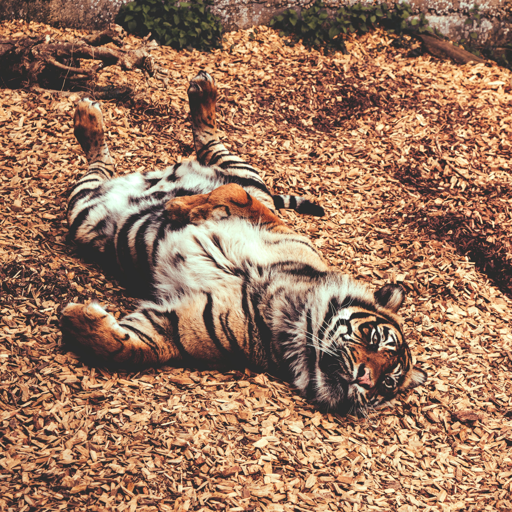

Discover. Learn. Protect.

This majestic apex predator plays a crucial role in maintaining ecological balance within their habitats.
 Beyond their playful nature, otters play an important ecological role by helping maintain healthy aquatic ecosystems.
Beyond their playful nature, otters play an important ecological role by helping maintain healthy aquatic ecosystems.
 Known for their resilience and strength, water buffaloes are essential to both wild ecosystems and agricultural communities.
Known for their resilience and strength, water buffaloes are essential to both wild ecosystems and agricultural communities.
 An adorable baby monkey showing the early stages of independence that are vital for survival in the wild.
An adorable baby monkey showing the early stages of independence that are vital for survival in the wild.